海の子たる所以
せっかく海のそばに戻ってきたので、それっぽいもの食う。
海のそばにある、海のもの食うための施設。いろいろあるけど今日行ったのはそのひとつ。
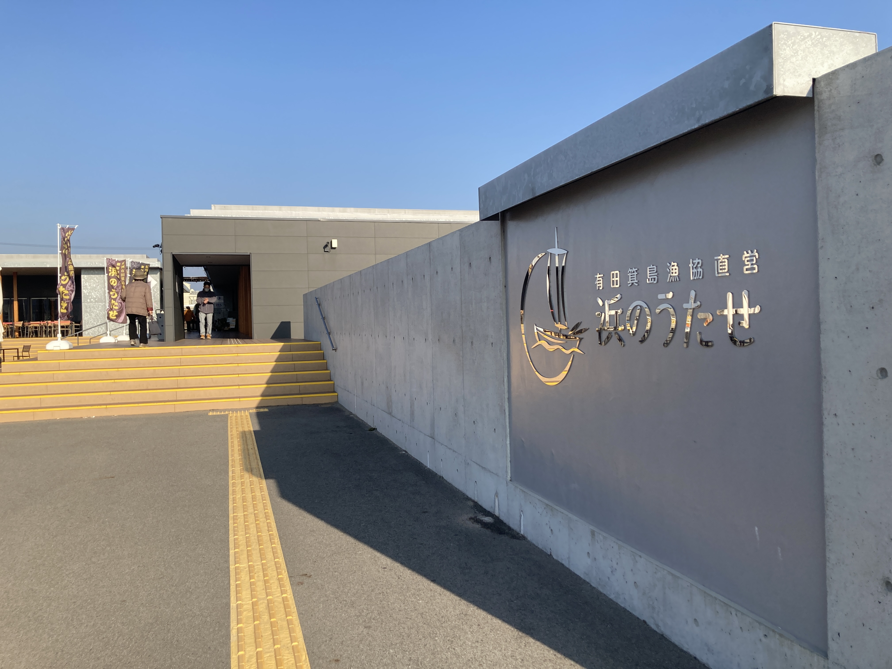
浜のうたせ。
太刀魚漁獲量日本一の町にあるよ。
まずお昼ご飯に海鮮丼を食べたよ。
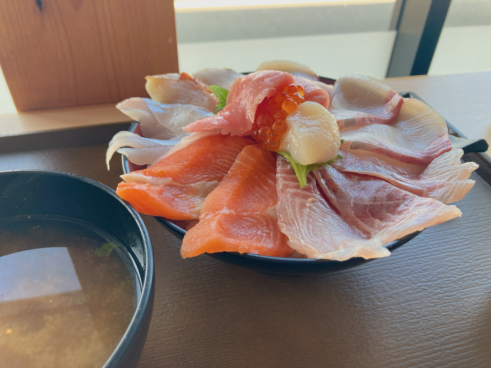
ﾃﾞｶ⁉️
魚の量多すぎ。お米足りませんでした。
これびっくりなのは海鮮丼がサブコンテンツなことで、メインは直売所。
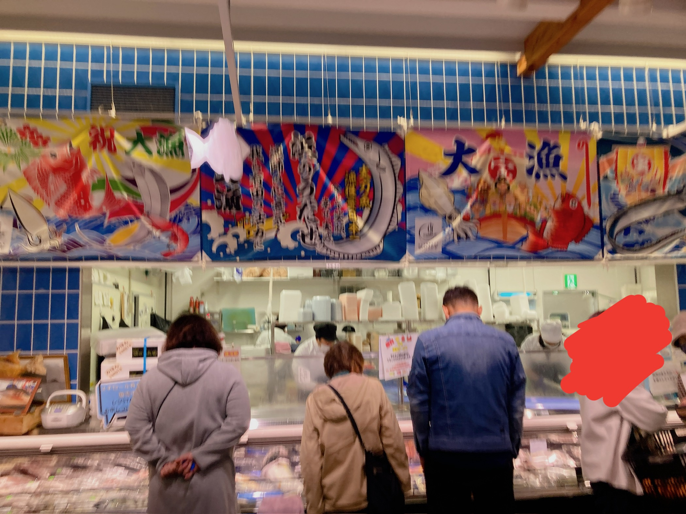
ｸｿﾃﾞｶ平台*nに山ほど魚がありますん。
真鯛とか太刀魚とか輝かしい魚が並んでますが。
ここを何処だとお思いで⁉️ 数歩先は海‼️ 超ウルトラスーパーフレッシュ魚の山‼️ なら選ぶべきはですね……
知らん魚です。
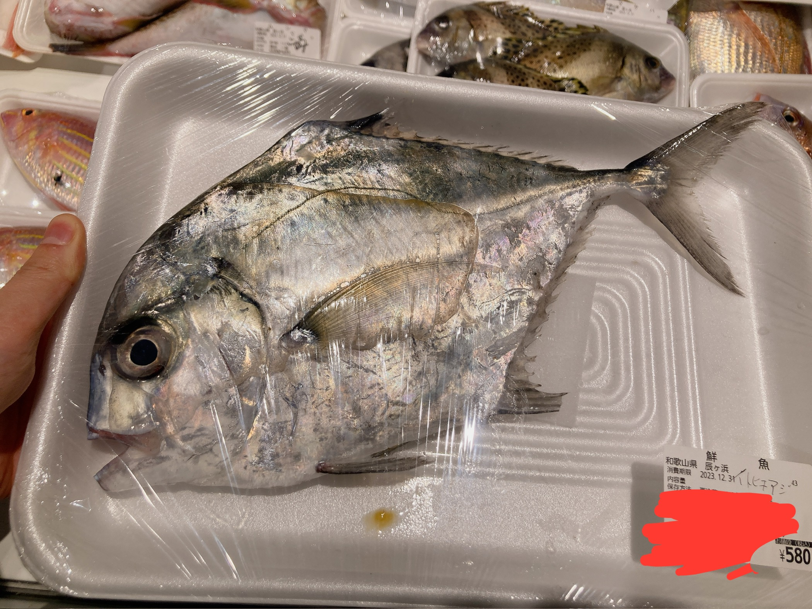
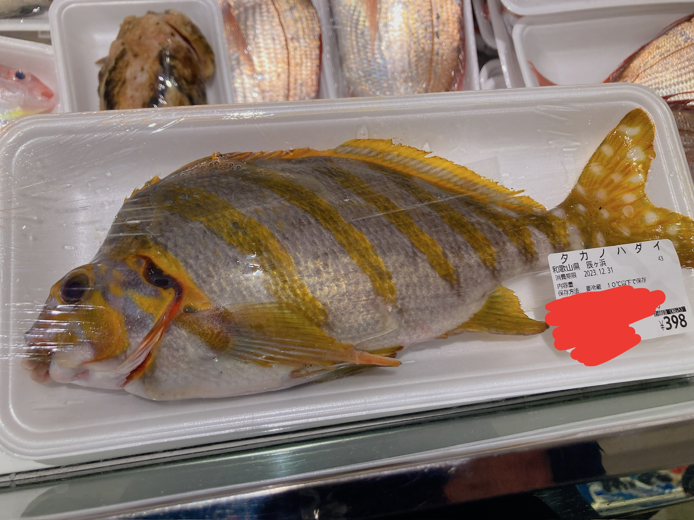
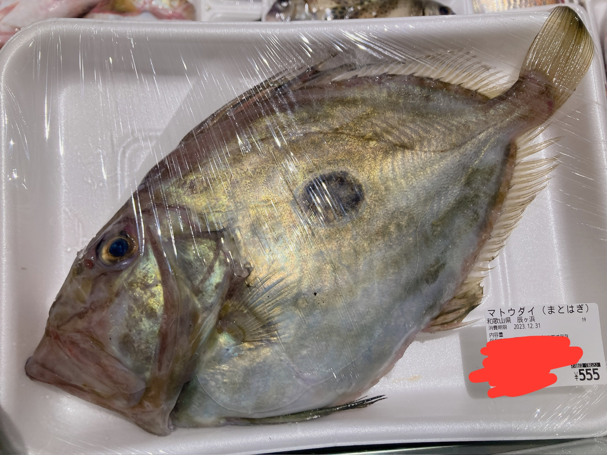
いやなんやこれ。見たことない。なんかとりあえず煮るか焼くかしたら美味いらしい。とりあえずお腹と鱗処理してもらった。ありがとう。
こういう直売所ってラベル何処まで伏せるべきかわかんないんだけど、なんか派手なのに安い魚ってことをｱｯﾋﾟﾙしたいので値段は開示しますん。こういうのが実は美味しいんだよきっと。好奇心ドリブン。
おうちに持って帰ります。
ﾜｲの実家はなんか魚n匹買って帰ってもなんとかなるようになってます。がんばります。
なんとかなりました。
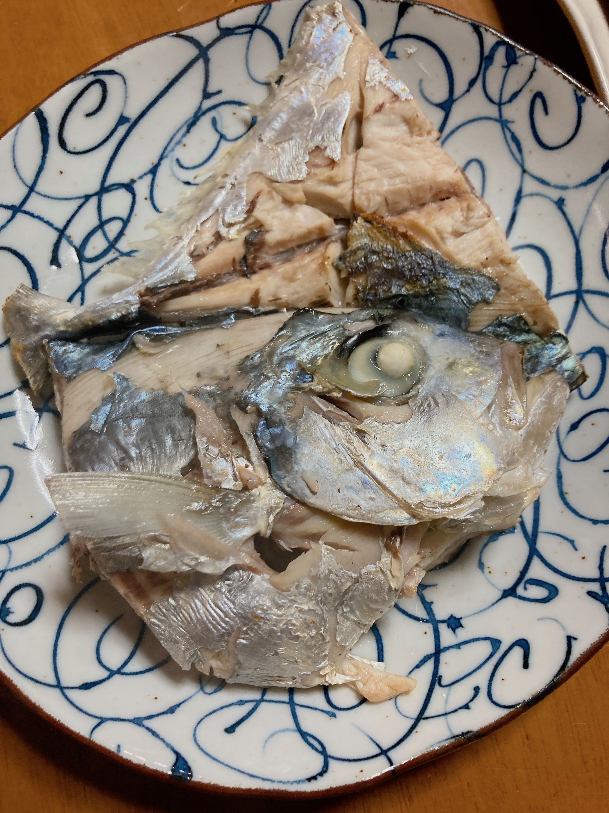
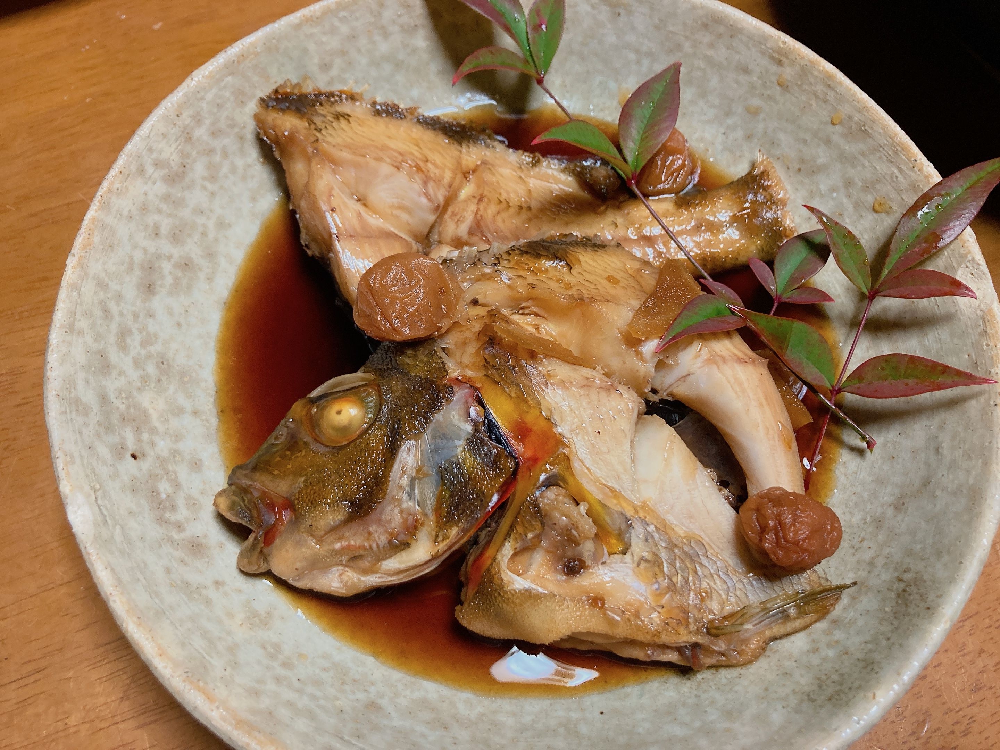
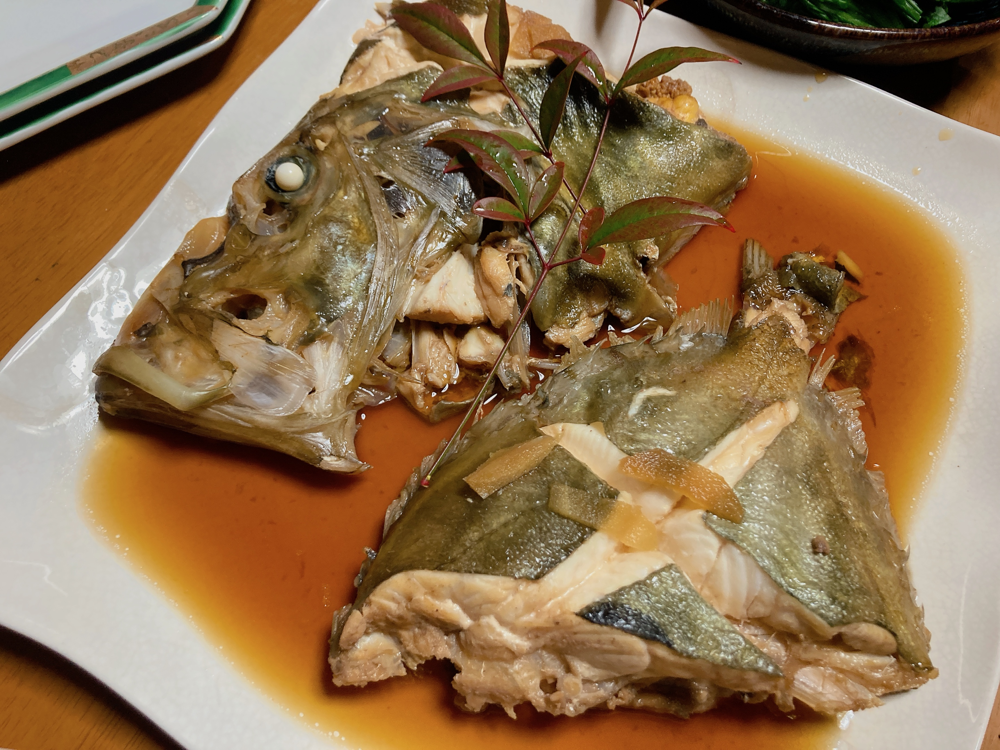
あとついでに買った刺身とかしらすとか。
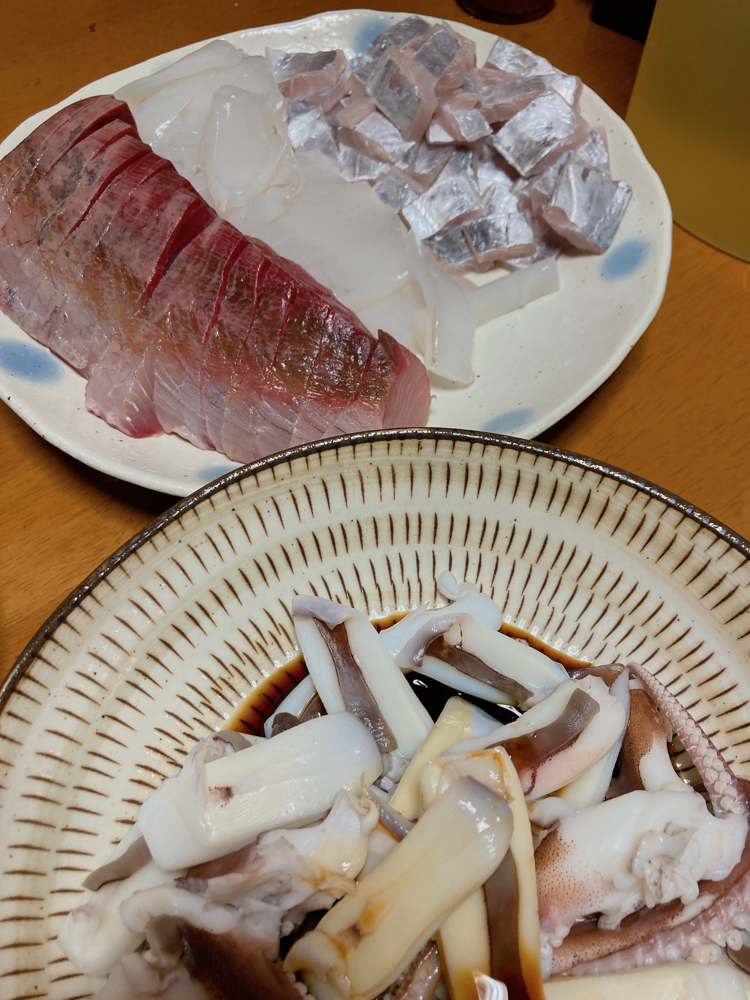
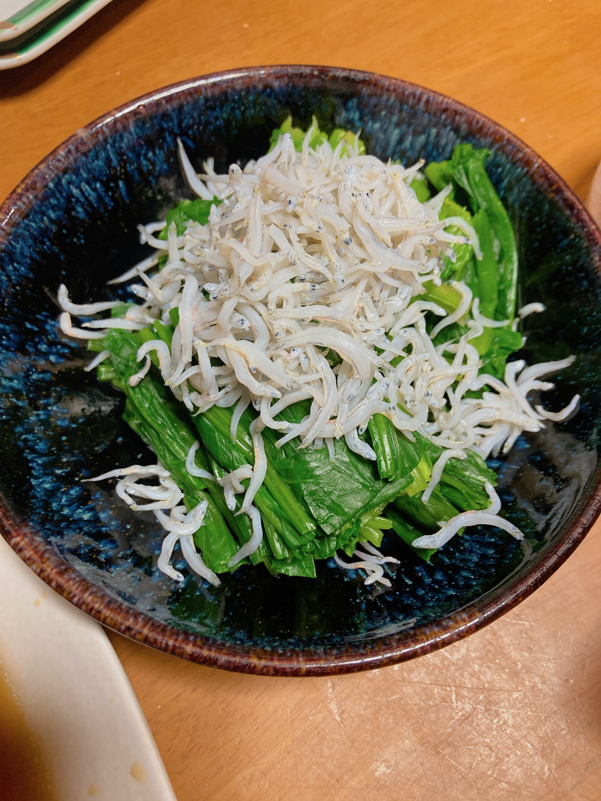
すごい‼ おいしい‼️ おかげで酔っ払い。過去最高潮にぐだぐだな日記。しゃーないね。こういうのはその日のうちに書くのがいいやんね。
明日素面になってから追記するかも。